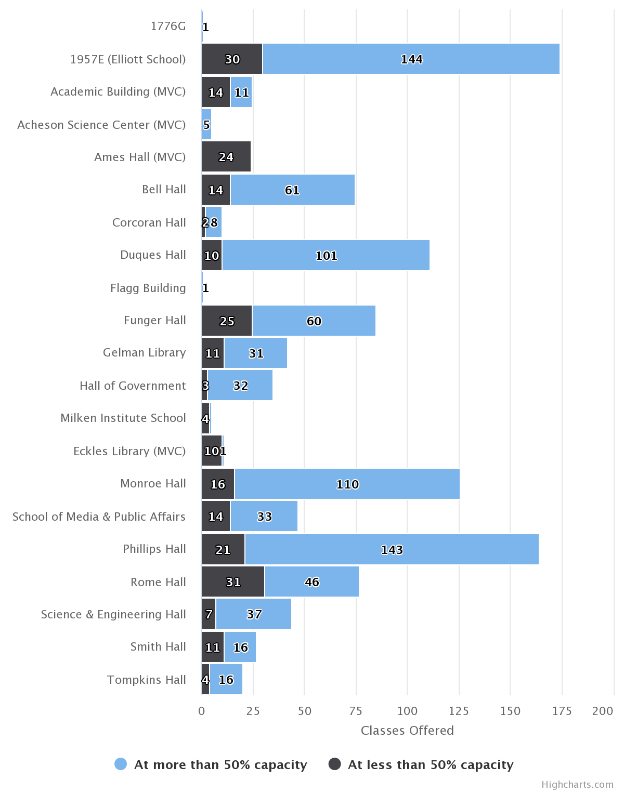
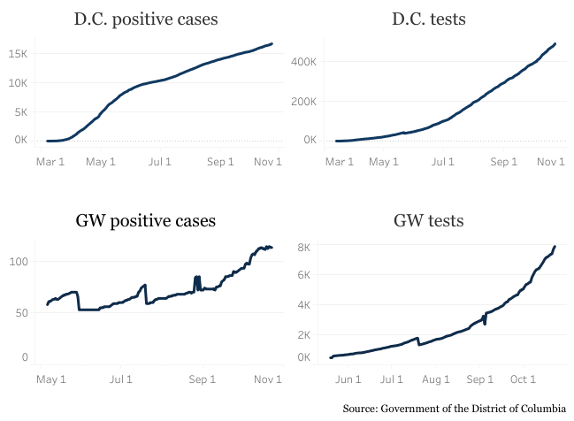
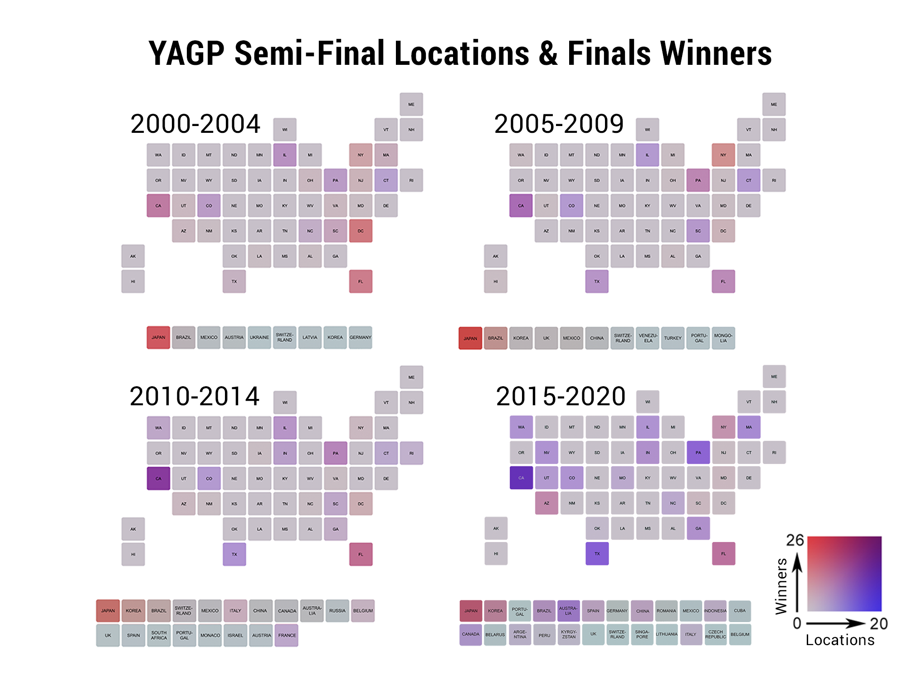

ILENA PENG
Freelance journalist and journalism student passionate about data analysis and visualization, among many other things.
Currently: Data journalism master's student at Columbia Journalism School
Things I use: R/RStudio, Stata, Tableau Public, Adobe Creative Suite, HTML/CSS
Publications I've written for: Washington City Paper, The DC Line, Atwood Magazine, Pointe Magazine, Food52
What I write: hard news, feature writing, arts reporting and criticism
Where I learned: The George Washington University '21, AAJA Voices '21, Medill Cherubs '17
Data visualization
Click on the headlines to view each project
Less than a quarter of fall class listings would allow for social distancing: Hatchet analysis
The GW Hatchet Analysis of fall 2020 GW enrollment and room capacities using manually collected data from the University's schedule of classes, course registration service and the office of the registrar's website. Data analyzed in Stata; charts created with Highcharts.js.
Black Lives Matter rallies documented across the United States

The GW Hatchet Chloropleth map of Black Lives Matter protests and riots across the United States. Data from the Armed Conflict Location & Event Data Project (ACLED); accleddata.com. Created with QGIS.
Personal project Analysis of techniques used in Polish composer Frederic Chopin's études. This project originated as an entry to Tableau's 2021 Iron Viz contest, which you can view here. Created with HTML, CSS and D3.js.
COVID-19 tests and positive cases at GW, across D.C.
The GW Hatchet A tracker comparing the number of COVID-19 tests and positive cases in the GWU neighborhood and across D.C., which was updated weekly until the end of July 2021. Created with Tableau Public.
The GW Hatchet Map of popular D.C. destinations for The GW Hatchet's Orientation Guide. Created with Leaflet.js.
YAGP winners and locations over time
Personal project Analysis of the international growth of ballet competition Youth America Grand Prix over 20 years. Graphics created with R and Adobe Illustrator.
Personal project Bubble chart of choreographer George Balanchine’s ballets. Created with Tableau Public.
Percentage of U.S. states living in drought

#TidyTuesday challenge Map of percentage of U.S. states living in droughts of various severities. Created with R and Adobe Illustrator.
Class project Infographic on COVID-19 misinformation. Created with Adobe Illustrator.
Other projects
Class project Mini documentary on the recovery process for California’s Big Basin State Park following the August 2020 CZU lightning complex fires, which severely damaged the park. Edited in Adobe Premiere Rush.
Class project Mini documentary on a student-run outdoor adventure group. Edited in Adobe Premiere Pro.
Personal project Project on light pollution for the Planet Forward Storyfest 2020 contest. Created with HTML/CSS/JS.
Class project Visual project mapping and analyzing locations in Mary Shelley’s “Frankenstein.”
The emoji guide to destressing
Personal project 24-hour personal project created on National Emoji Day 2018.